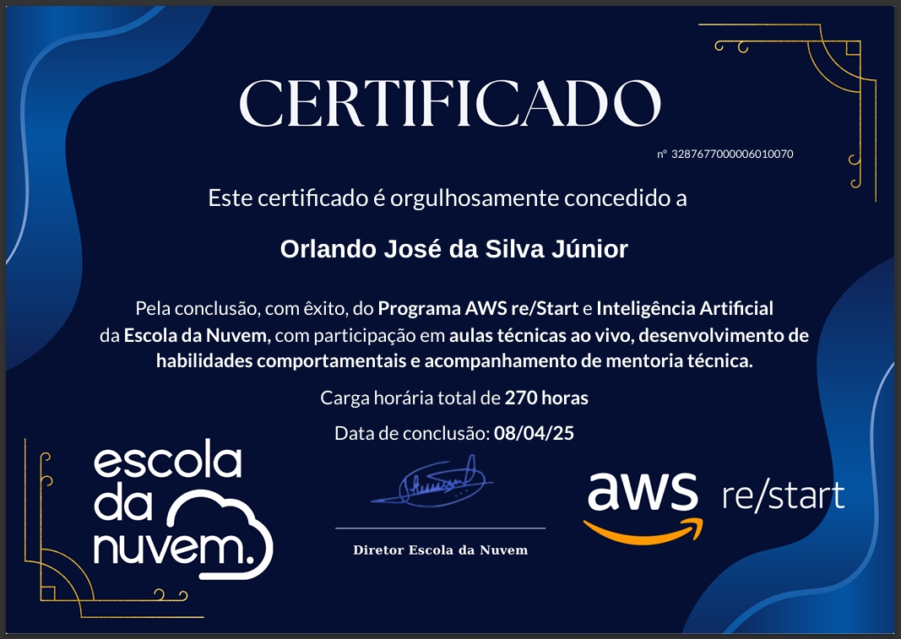

Desenvolvimento Web • Inteligência Artificial • LGPD • Compliance
ORLANDO JUNIOR
Arquiteto de Soluções em IA com sólida experiência em desenvolvimento web, especialista em LGPD e Compliance para ambientes digitais.
Sobre Mim
Orlando Junior
Pai, aprendiz contínuo e profissional de tecnologia.
Pai • Estudioso • Curioso
Transformo estudo constante em execução prática para construir soluções com propósito, disciplina e impacto real para pessoas e negócios.
Sou pai e apaixonado por aprender continuamente. No dia a dia, gosto de estudar, ler e transformar conhecimento em prática, sempre buscando evolução pessoal e profissional com consistência.
Também gosto de conhecer lugares novos e experimentar comidas diferentes. Essas experiências ampliam minha visão de mundo, alimentam minha criatividade e fortalecem minha capacidade de resolver problemas com empatia.
Levo essa curiosidade e disciplina para minha atuação em tecnologia, unindo visão estratégica e execução prática para entregar soluções úteis, seguras e escaláveis para pessoas e organizações.
Graduação
Formação académica concluída que sustenta minha atuação com levantamento de requisitos, arquitetura de softwares com foco em tecnologias web e práticas modernas de desenvolvimento.
Superior de tecnologia em Análise e Desenvolvimento de Sistemas

Formação superior que me proporcionou uma base sólida no ciclo de vida do desenvolvimento de software, com ênfase em tecnologias web. A grade curricular cobriu desde a análise de requisitos e modelagem de dados até o desenvolvimento back-end e front-end, preparando-me para criar soluções digitais completas e eficientes.
Ver Matriz CurricularPós-graduação
Especializações concluídas e em andamento, aprofundando competências em cloud, IA e compliance digital.
Cloud Computing
Pós-graduação com foco em arquitetura cloud, automação e aplicações de IA. Módulo já concluído com certificação pública.
Código de validação do módulo concluído: 02deea7d90940c7bf643c3a496e875c3.
Validar módulo concluídoArquiteto de Soluções IA Expert
Especialização voltada para arquitetura de soluções em IA, cloud e automação. Certificação parcial já obtida.
Código de validação do módulo concluído: 02deea7d90940c7bf643c3a496e875c3.
Validar módulo concluídoMBA em LGPD e Compliance Digital
MBA focado em privacidade, proteção de dados e compliance digital, com ênfase em legislação e práticas modernas.
Código de validação do módulo concluído: 02deea7d90940c7bf643c3a496e875c3.
Validar módulo concluídoCertificações
Certificações internacionais com validação pública, emitidas por Amazon Web Services. Nota: Combinam formação prática em desenvolvimento de habilidades (AWS re/Start) com certificação oficial validada (AWS Certified Cloud Practitioner - ível Fundamental), demonstrando fluência em nuvem AWS.

Certificação Profissional
AWS re/Start & Inteligência Artificial
AWS re/Start & Inteligência Artificial
Escola da Nuvem
Programa AWS re/Start e Inteligência Artificial da Escola da Nuvem, com participação em aulas técnicas ao vivo, desenvolvimento de habilidades comportamentais e acompanhamento de mentoria técnica.
Carga horária total: 270 horas
Data de conclusão: 08/04/2025

Amazon Web Services Training & Certification
AWS re/Start Graduate
Programa de Desenvolvimento de Habilidades: Conclusão de rigorosos cursos de Fundamentos de TI, AWS Cloud e treinamento profissional. O programa inclui aprendizado baseado em cenários reais do mundo, laboratórios práticos e disciplinas, apoiado por mentores profissionais e treinadores credenciados.
Ver credencial no Credly
Amazon Web Services Training & Certification
AWS Certified Cloud Practitioner
Nível Fundamental: Entendimento fundamental dos serviços de TI e seus usos na AWS Cloud. Demonstra fluência em nuvem e conhecimentos fundamentais de AWS, com capacidade de identificar e serviços essenciais necessários para configurar projetos focados em AWS.
Ver credencial no Credly